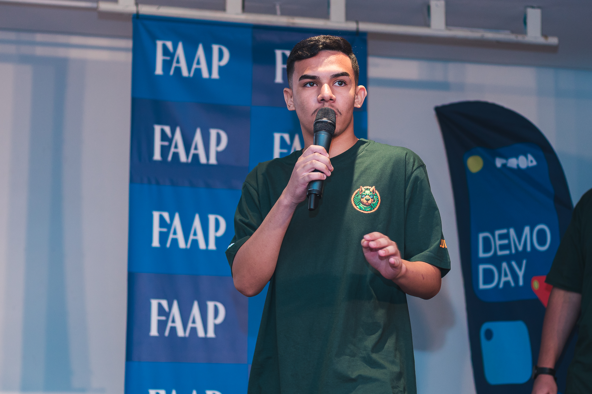

Gustavo Michel
Olá, tenho 19 anos e estudo programação desde 2019, com foco em Ciência de Dados e Inteligência Artificial.
Sou formado em Desenvolvimento de Sistemas e atualmente curso Análise e Desenvolvimento de Sistemas na Fatec Zona Leste.
Desenvolvo projetos acadêmicos e pessoais envolvendo Machine Learning e Deep Learning, desde a análise de dados até o deploy de modelos via APIs com Flask e Docker em ambientes Linux e cloud (Azure e GCP).
Tecnologias & Ferramentas
 LangChain
LangChain
Formação Acadêmica
Capacitado para analisar, projetar, documentar, especificar, testar, implantar e manter sistemas de informação. O curso também prepara o estudante para atuar com ferramentas computacionais, infraestrutura de TI, além de promover habilidades em matemática discreta e estatística aplicada, senso crítico, trabalho em equipe e responsabilidade social e ambiental.
Programa gratuito e semipresencial com duração de seis meses, voltado à formação em programação e ao desenvolvimento pessoal. No núcleo técnico, o curso promove competências em programação e desenvolvimento de sistemas por meio de trabalho em grupo, projetos práticos e vivências corporativas. Já o núcleo comportamental foca em autoconhecimento, propósito profissional, carreira e mercado de trabalho. A formação inclui ainda incentivos como uniforme, material didático e certificados (PROA e Senac), e se destaca pelo alto índice de empregabilidade entre os formandos.
Formação com foco prático na análise de problemas organizacionais e na criação de soluções tecnológicas eficientes. O profissional formado é capaz de dimensionar requisitos para projetos, testar programas de computador, realizar manutenção, modelar, implementar e manter bancos de dados, além de adotar normas técnicas durante o desenvolvimento de sistemas.
Projetos
LUDUS
Desenvolvida como projeto DemoDay vinculado ao Instituto PROA, A Ludus é uma plataforma web de jogos criada com o objetivo de dar visibilidade a desenvolvedores independentes brasileiro.
CHURN PREDICTION
Pipeline completo de análise exploratória, tratamento de dados e previsão de rotatividade de clientes utilizando técnicas de Machine Learning supervisionado. O projeto inclui comparação de modelos, avaliação com métricas e explicabilidade dos resultados.
HANDMOTION
Sistema de rastreamento de mãos e gestos em tempo real utilizando MediaPipe e OpenCV, com inferência otimizada para rodar em hardware convencional. O projeto explora interação por gestos para controle de aplicações.
FRAUD DETECTION
Detecção de fraudes em transações de cartão de crédito por meio de pipelines de Machine Learning, com foco em lidar com forte desbalanceamento de classes e alto volume de dados.
BrainQuest
Trabalho de conclusão de curso (TCC): plataforma educacional gamificada para ensinar lógica de programação por meio de desafios e minijogos interativos.
Animals Classifier
Classificador de imagens de animais utilizando transfer learning com ResNet50, explorando fine-tuning de camadas e técnicas de aumento de dados para melhorar a generalização.